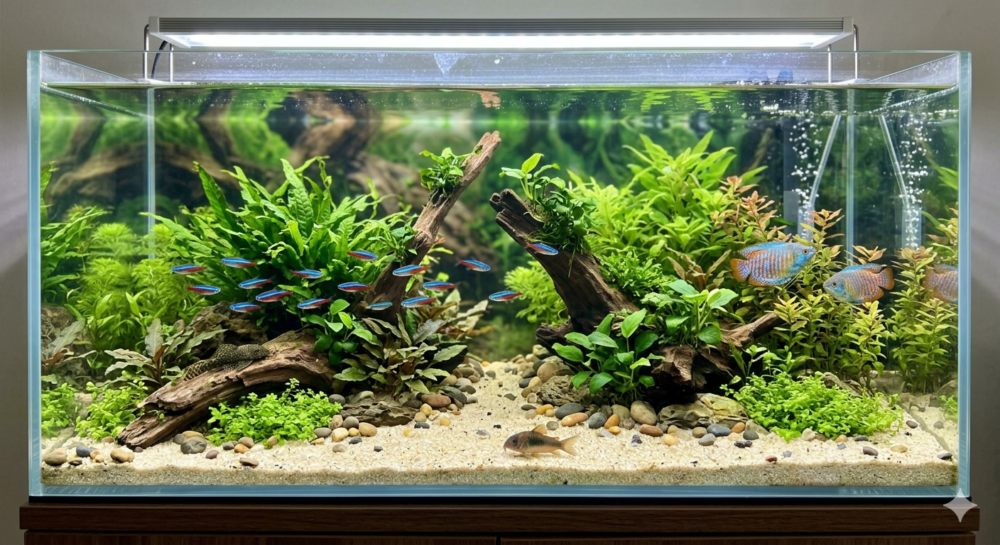

仙台デザイン＆テクノロジー専門学校で Web開発を学んでいます。同時にvulnhubを活用した、脆弱性の検証にも取り組んでおります。
仙台デザイン&テクノロジー専門学校でWeb技術を学んでいます。 VulnHubの仮想環境を利用して脆弱性の仕組みを理解しながら、 セキュリティ分野にも興味を持って学習しています。
Reactを使用し、家庭菜園の相談ができる AIチャット形式の診断アプリを制作しました。
Email: wjpajm@email.com